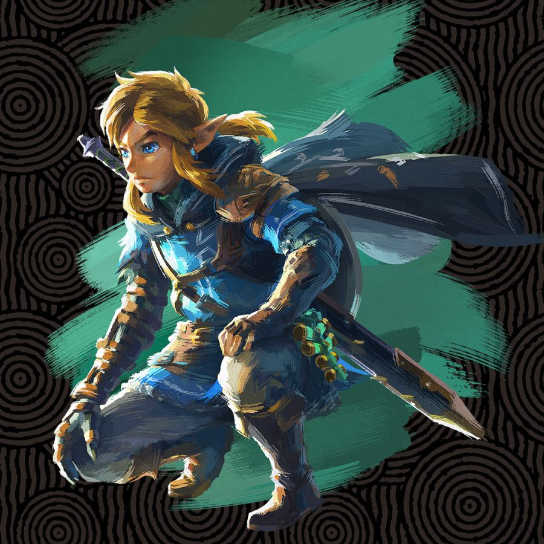

젤다의 전설-소개
《젤다의 전설》 시리즈에서는 엘프 모습을 한 하일리안 청년 링크와 하일리아 여신의 환생 젤다가 두 주인공으로서 등장한다
게임의 무대가 되는 하이랄 왕국을 위협하는 마왕 가논돌프를 물리쳐 세계를 구하는 것이 주된 이야기이다.
가논돌프는 하이랄의 세 여신이 남긴 성스러운 유물 트라이포스를 사용해 세계를 자신이 원하는 어둠의 모습으로 만들고자 하는 목적을 가진 악당이다.
트라이포스는 각각 용기, 지혜와 힘을 상징하는 삼각형 모양의 세 유물로 구성됐다.
각 작품에서의 링크와 젤다는 직속 후속작이 아닌 이상 모습만 유사한 서로다른 인물들이나, 링크는 왼손잡이이며 녹색옷을 입는 등의 시리즈에 걸친 공통점이 존재한다.
젤다의 전설에 대해 더 알고 싶다면,
홈페이지로 이동⬇️
LEGEND OF ZELDA OFFICIAL HOMPAGE
젤다의 전설 일러스트
